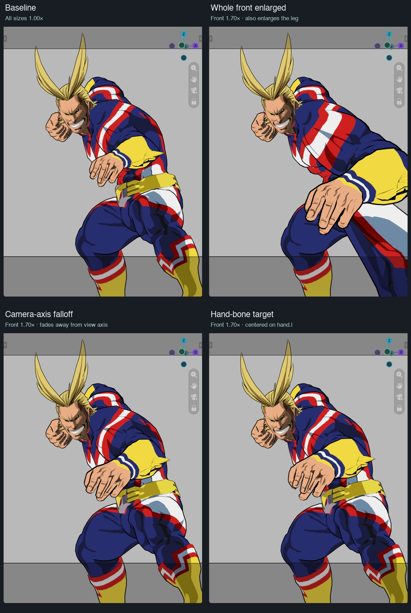
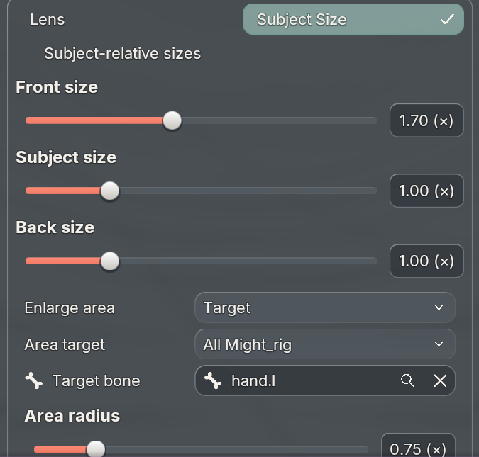

Actual All Might Metal captures at the same camera, 15 mm lens and frame 158. Subject and Back size remain 1×. Bottom comparisons use Area radius 0.75× and Area softness 0.
The experiment is installed on the preview branch. Original scene settings were restored after capture; the file was not saved. Lens remains the default.


Radius means half-strength distance in subject depths. Softness broadens the smooth tail; it is not a sharp selection mask.
Geometry, BUI and native driver lifecycle fixtures pass on Blender 4.2.23, 4.3.2, 4.4.3, 4.5.15, 5.0.1, 5.1.2 and 5.2.2 on macOS. Native transform drivers follow object and bone animation, coexist with the head focus, and retain their identities during warm updates.
A 32,001-point update measured roughly 1.1 ms for all three area modes; this is not full-scene FPS. The localized field adds no Python vertex loop, subdivision or collision pass. All 14 added strings have entries in the existing 12-language catalog.
The continuous radial mapping stays ordered across supported size/softness ranges. Arbitrary coarse-triangle collisions, exact volume preservation, a bounds gizmo, a dedicated motion GIF and physical Windows Vulkan/OpenGL replay are not established by these checks.